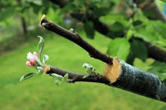
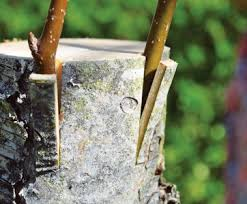
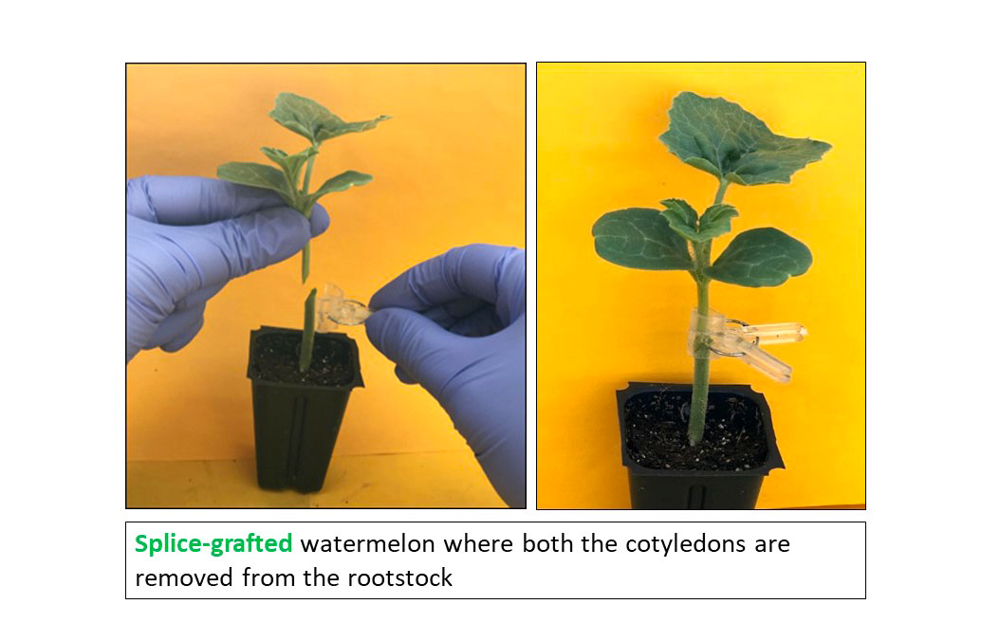

Videos
Cleft Grafting
Cleft grafting involves making a vertical cut in the rootstock and inserting a scion with a matching wedge cut.
- Make a vertical cut in the rootstock.
- Prepare the scion with a matching wedge cut.
- Insert the scion into the cut of the rootstock.

Four Flap Grafting
Four flap grafting involves creating four flaps in the rootstock to hold the scion in place.
- Create four flaps in the rootstock.
- Prepare the scion with a wedge cut.
- Insert the scion into the flaps of the rootstock.

Side Veneer Grafting
Side veneer grafting involves attaching a scion to the side of the rootstock.
- Make a diagonal cut on the rootstock.
- Prepare the scion with a matching cut.
- Attach the scion to the side of the rootstock.

Bark Grafting
Bark grafting involves inserting a scion into a slit in the bark of the rootstock.
- Make a vertical slit in the bark of the rootstock.
- Prepare the scion with a wedge cut.
- Insert the scion into the slit of the bark.

Splice Grafting
Splice grafting involves cutting both the scion and rootstock at matching angles and joining them together.
- Cut both the scion and rootstock at matching angles.
- Join the two pieces together.
- Secure them in place until they heal.
